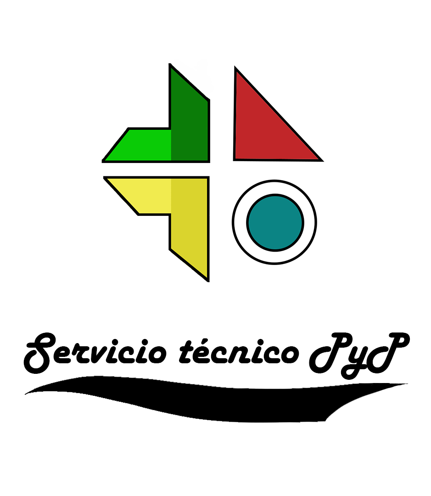

¿Quiénes somos?
Un grupo de personas que con la esperanza de cambiar al pais sale desde el corazon de la provinvia de Latacunga, para cambiar su forma de vivir y ayudar a los demas con los problemas del dia a dia.
Trayectoria
Desde los comienzos del año 2003 se ha venido sirviendo en la reparacion de lavadoras y recientemente se ha puesto en marcha el proyecto de vender laptops de acuerdo a la economia de los ciudadanos que atraviesan una crisis, con experiencia en el campo de reparacion y conocimiento en muchos tipos de marca, se ha vuelto una experiencia fundamental para marcar una diferencia en la rapidez de soluciones de problemas
